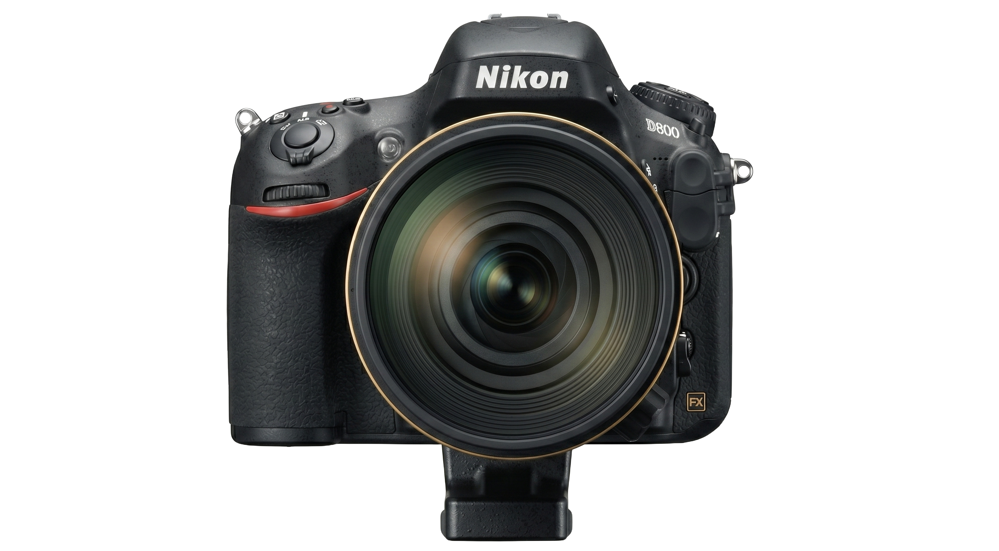
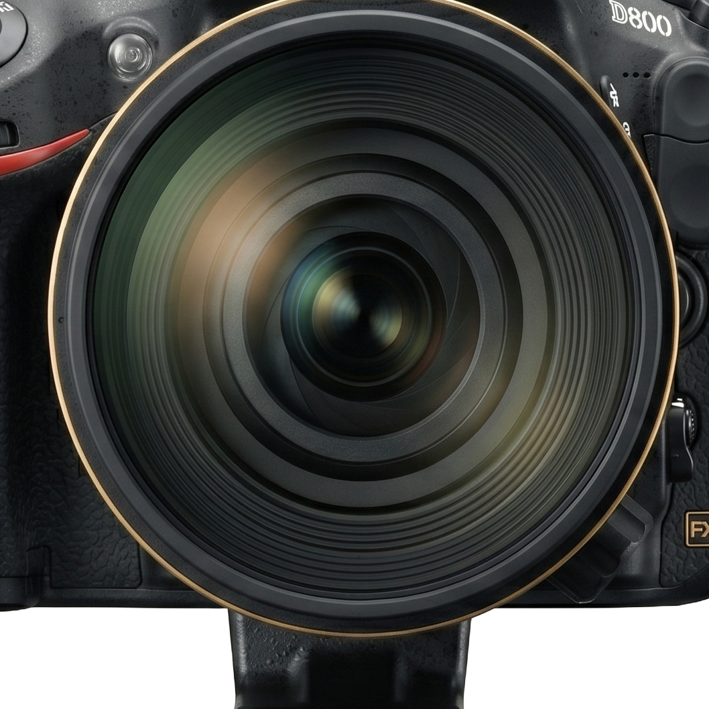
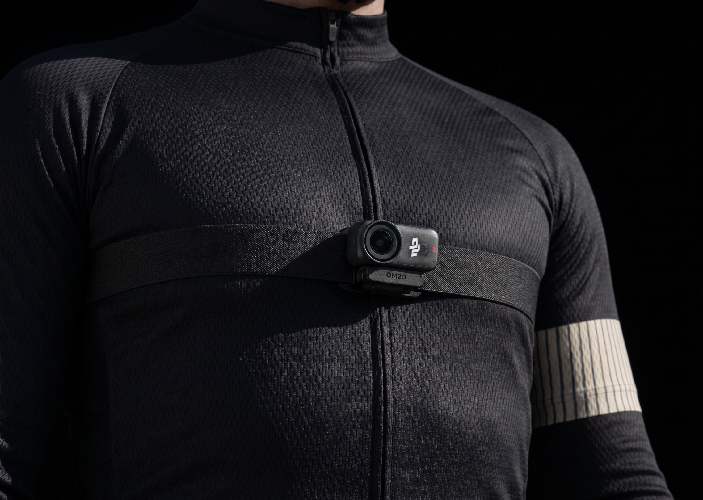

SIFU TANGKAP STUDIOS
We catch the game so you don't have to. Scroll the kit ↓



Every match. Every angle. Edited & delivered the next morning.
First-person chest-strap. Feel the run before you see it.


Whistle to whistle. Tagged by half & possession. Yours forever.
Tell us where & when. We'll prep a WhatsApp message for you.
Price may include travel costs if applicable.